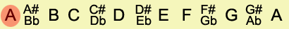

Articles: What Is Music? | What Are Notes? | Sharps And Flats | Half Steps And Whole Steps | What Is A Scale? | The Major Scale | What Is A Key?
The Major Scale
The major scale is the most fundamentally important scale to understand. In practical music theory the Major scale is at the core of how we interpret and define almost every melody or harmony.
As mentioned in the last lesson, the major scale is made from a preset pattern of whole steps and half steps. The pattern of whole steps (W) and half steps (H) that is used to build a major scale is as follows:
W W H W W W H [*note: this pattern should definitely be memorized]
To help this information sink in a bit more, let’s try building some major scales.
First we pick a root note. This can be any note, but for now we’ll start with the note A.

Starting with the note A, let’s follow our pattern of whole steps and half steps to determine the other notes that will be in the A Major scale.

As you can see, the A Major is just a set of notes that includes: A, B, C#, D, E, F#, G#. The last half step in the pattern would bring us back to A.
Let’s take a look at one more example. Let’s try starting on C.

Notice that if we start on C we do not land on any sharp or flat notes (aka. accidentals). For this reason it is very common to use the key of C Major in beginning music theory exercises.
This information is extremely important for anyone who hopes to develop their understanding of music theory. I would highly recommend writing out the notes that are in each of the following Major scales:
- C major scale
- G major scale
- F major scale
- D major scale
- Bb major scale
- A major scale
- Eb major scale
- E major scale
- Ab major scale
- B major scale
- Db major scale
- F# major scale
- Gb major scale